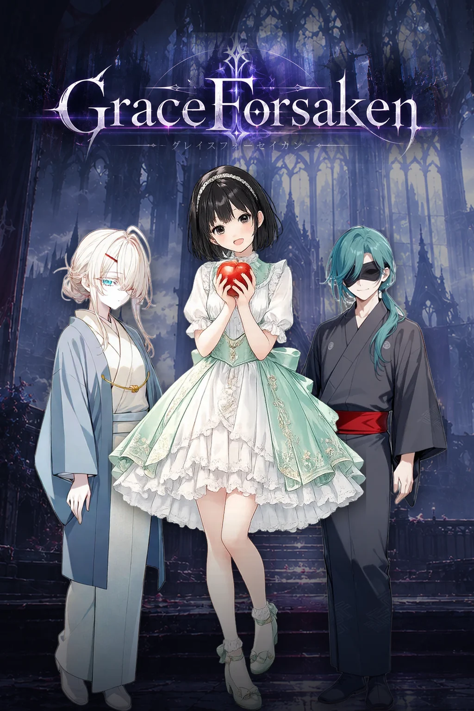

GAME 03
GraceForsaken
4人と4人が、横一列6マスの戦場で向かい合うターン制コマンドバトルRPGです。
誰をどこに立たせるか。間合いと隊列が、スキルと同じくらい勝敗を左右します。

Ⅰ作品概要
| 題名TITLE | GraceForsaken（グレイスフォーセイカン） |
|---|---|
| 種類GENRE | 4vs4 マス目・間合い配置型 ターン制コマンドバトルRPG |
| 分量VOLUME | キャラクター30人。キャラクターごとのシナリオ（全3話）を順次公開中 |
| 対戦VERSUS | ゴースト対戦（AI操作の防衛パーティと対戦）と、オンラインのリアルタイム対戦 |
| 操作INPUT | マウス・タッチ（PC・スマートフォン対応） |
| 料金PRICE | 無料。課金要素はありません（ガチャはゲーム内通貨「Soul」のみで回します） |
| 保存SAVE | 進行はブラウザに自動で保存されます |
| 公開RELEASE | 2026年9月26日 |
| 制作AUTHOR | SY4869（個人制作） |
Ⅱゲームの特徴
- 6マスで戦う 戦場は「自陣の後衛・中衛・前衛」と「敵陣の前衛・中衛・後衛」の6マス。互いのマスが離れているほど距離が遠くなり、キャラクターごとの射程より遠い相手には攻撃が届きません。
- 隊列が崩れる 前衛が全員倒れると、残った仲間は1マスずつ前へ押し出されます。後ろに控えていた魔法使いが、いつの間にか最前線に立っていることもあります。
- 30人、それぞれの固有スキル 全員が1つずつ固有のパッシブを持ち、6つの候補から3つのスキルを選んで戦います。組み合わせは何度でも選び直せます。
- キャラクターごとの物語 ストーリーはキャラクター1人につき全3話。一緒に戦い、最終話を越えるとそのキャラクターが仲間になります。
- フィールドと属性 昼と夜、草原・水辺・山脈・火事場の組み合わせで戦場の性質が変わります。火・水・風・雷・光・闇の相性も、ダメージを大きく動かします。
- 2種類の対戦 他のプレイヤーが残した防衛パーティ（AI）と戦うゴースト対戦と、今いるプレイヤーと1手ずつ指し合うリアルタイム対戦があります。
Ⅲ戦闘の仕組み
ここでは何がどう働くかだけを書きます。操作と具体的な進め方は遊び方にまとめてあります。
距離と射程
距離は 自分のマスの番号 + 相手のマスの番号 − 1 で決まります（前衛が1、後衛が3）。前衛どうしなら距離1、後衛どうしなら距離5。射程1のキャラクターは前衛から敵の前衛にしか届かず、射程5なら戦場のどこへでも届きます。
行動の順番
ラウンドごとに、速度の高いキャラクターから1回ずつ行動します。一部のキャラクターやスキルは、1ラウンドに2回・3回と行動できます。
行動の種類
| 通常攻撃ATTACK | 物理攻撃力と魔法攻撃力の高い方で攻撃します。MPは使いません。 |
|---|---|
| スキルSKILL | MPを使って攻撃・回復・強化などを行います。 |
| クイックQUICK | 行動を消費せずに使えるスキル。使ったあと、同じ手番でさらに行動できます。 |
| 移動MOVE | 隣のマスへ1つ動きます。前衛に1人しかいないときは、その1人は後ろへ下がれません。 |
情報の秘匿
相手のキャラクターは見えますが、どのスキルを習得しているかは見えません。使われたときに初めて分かります。
Ⅳ遊べるモード
| ストーリーSTORY | キャラクターごとの全3話。最終話をクリアすると、そのキャラクターが仲間になります。 |
|---|---|
| ゴースト対戦GHOST | 他のプレイヤーが設定した防衛パーティ（AI操作）と戦います。自分の勝率に近い相手が選ばれます。 |
| リアルタイム対戦REALTIME | オンラインで今いるプレイヤーと対戦します。15秒待っても相手が見つからないときは BOT と対戦します。 |
| ガチャGACHA | ゲーム内通貨 Soul で新しい仲間を招きます。未所持のキャラクターが優先して出ます。 |
Ⅴ対応環境
| ブラウザBROWSER | Chrome、Safari、Firefox、Edge の最新版を想定しています。 |
|---|---|
| 操作INPUT | マウス、またはタッチで操作します。 |
| 保存SAVE | 進行はブラウザ（localStorage）に保存されます。別のブラウザやシークレットウィンドウには引き継がれません。 |
| 通信NETWORK | 通信するのはリアルタイム対戦のときだけです。ストーリー・ゴースト対戦・ガチャは通信なしで遊べます。 |
Ⅵ更新履歴
| 2026年9月26日 | 公開しました。シナリオは8人（24話）、リアルタイム対戦に対応しています。 |
|---|